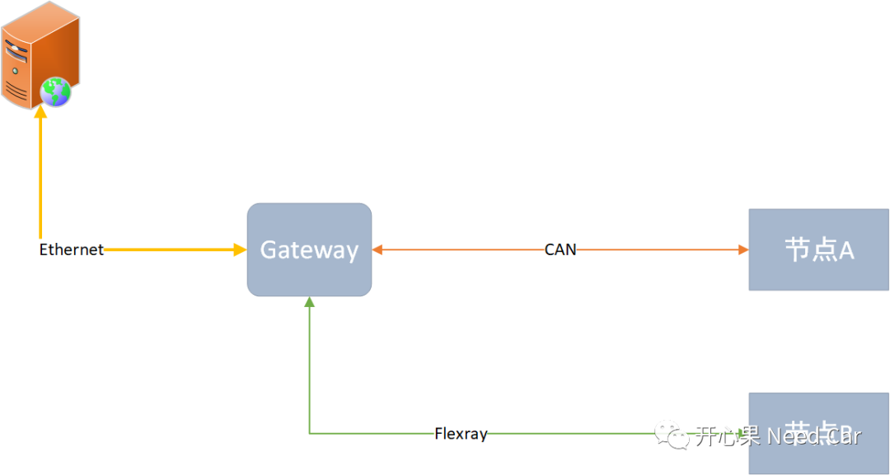

开心果 Need Car · 2021-10-23T09:09:00+08:00 · 微信原文
前言

快照信息是否可以通过诊断报文上传？个人理解：不可以。一般来说，诊断指令的发送需要满足一定的前置条件，比如：车速小于某个阈值（如：5km/h）,诊断电压是否满足条件（一般诊断电压范围比通信电压范围窄）等。而车辆行使中产生的故障，其车速是不确定的，因此只此条件就不能基于诊断报文去实现该功能。
使用应用报文上报故障快照信息是否可行？个人理解：可行。由于应用报文的发送不需要考虑对应的前置条件（如：车速），因此该上报方式可行性较高。
如果应用报文可行，有如下几个问题需要思考：
（1）使用事件性报文还是周期性报文更好呢？
答案显而易见：事件性报文。由于事件报文只是在故障发生时上报，因而可有效的降低总线负载，此方式将优于周期性报文。
（2）我们说上报故障的快照信息，有一个问题不能忽略：快照信息数据量有多大？举例：某个节点只有CAN总线通信，且使用经典CAN帧(一帧最大负载8byte)，如果需要上报的快照信息大于8bytes，则一帧上报并不能将某个DTC的所有快照信息一次性上报，需要分段传输，如果分段传输则会存在丢帧的可能性，因此在开发时就需要考虑此因素所带来的风险。
（3）如果在极端的情况下，发生了多个故障，需要传输多个故障的快照信息，故障快照信息是否有最大延时要求？如果有最大延时要求（如：5s）,5s内最后一个需要上报故障的快照信息是否可以上传完成？这些都需要在开发设计阶段进行重点关注。
（4）既然上传快照信息，还需要考虑这样一个问题：故障对应的快照信息是一个还是多个？举例：有些需求要求某个DTC存储的快照信息可以有多个，比如某个DTC可以对应两个快照信息的Record Number（如：0、1），当前的操作循环内产生第一次故障时，将快照信息存储在Record Number0对应的存储区，当前操作循环的最后一次发生故障时快照信息存储在Record Number1对应的存储区。这时就需要明确该DTC的两个快照信息是否都需要上传。